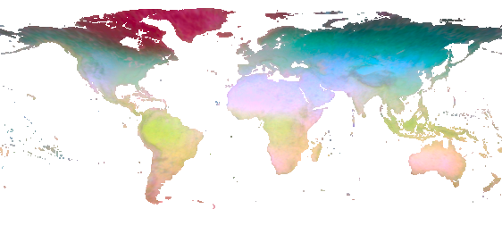

Overview
Geographic embeddings with adjustable granularity.
MIND (Matryoshka Implicit Neural Distillation) maps latitude and longitude to an embedding divided into chunks. In our experiments, early chunks capture broad geographic variation, while later chunks add finer spatial granularity. A downstream predictor can retain only leading chunks or downweight later chunks without retraining the encoder or supplying imagery.
That choice matters when predicting beyond nearby observations. On CoordBench's 52 datasets and 78 targets, MIND with the Chunked Penalty has the highest aggregate regression and classification scores among tested geographic INRs under random folds and every reported regional holdout.


Get started
From coordinates to embeddings in a few lines.
Run MIND at any coordinate, or read precomputed pixel embeddings for an area of interest.
Load the model with Torch Hub
Pass latitude–longitude pairs and keep as many leading dimensions as you need.
import torch
model = torch.hub.load("taylor-geospatial/mind", "mind", trust_repo=True)
coords = torch.tensor([[37.77, -122.42], [51.51, -0.13]]) # latitude, longitude
with torch.inference_mode():
full = model(coords, return_features=True) # [2, 3072]
features = full[:, :64] # [2, 64]Requires torch, numpy, safetensors, and huggingface_hub.
Read pixel embeddings with rioxarray
Read the first 64 dimensions for a small San Francisco AOI from the global 0.01° grid. The result is a NumPy array with ocean pixels set to NaN.
import rioxarray
import xarray as xr
url = "https://data.source.coop/tge-labs/mind/mind.zarr"
params = xr.open_zarr(url, consolidated=True).isel(emb=slice(0, 64))
ds = xr.open_zarr(url, group="0", consolidated=True).isel(emb=slice(0, 64))
# A small San Francisco AOI, in longitude/latitude.
aoi = ds.rio.write_crs("EPSG:4326").rio.clip_box(
minx=-122.50, miny=37.70, maxx=-122.30, maxy=37.90
)
# Decode stored values and mask ocean pixels.
features = aoi.embedding * params.emb_scale + params.emb_offset
features = features.where(aoi["mask"] == 1).to_numpy() # [64, height, width]Requires rioxarray, xarray, dask[array], zarr>=3, fsspec, and aiohttp. Change the bounds for your AOI and 64 for your embedding width.
Method
Distilling four teachers into one embedding.
A residual sinusoidal representation network (ReSIREN) maps Equal Earth coordinates to a 3072-d embedding. Nested supervision at 64, 128, 256, 512, 1024, 2048, and 3072 dimensions defines seven contiguous chunks. At each supervised dimension, linear heads reconstruct the embeddings of AlphaEarth Foundations (AEF), Climplicit, GeoCLIP, and SINR from all leading chunks. Training uses MINDSET's 12M land coordinates; the heads are discarded afterwards.

We observe coarser spatial granularity in early chunks and finer variation in later ones; nested supervision does not explicitly assign spatial granularity to any chunk. Truncation retains the leading chunks. The Chunked Penalty retains the full embedding but penalizes predictor coefficients for later chunks more strongly. We select the truncation dimension and regularization parameters using nested cross-validation, with regional folds for regional holdout and random folds otherwise.


Results
CoordBench results.
CoordBench contains 52 datasets and 78 prediction targets from nine sources. We fit linear predictors to frozen embeddings and report macro averages across datasets, using five folds and five fold-assignment seeds. Regional holdouts withhold whole latitude–longitude cells. Regression R2 is floored at −1 per target before averaging. MIND+CP leads the aggregate comparison; GeoCLIP has higher socioeconomic R2 at 20° and 40°.
Scroll the table to compare all regional holdouts.
| R2 | Accuracy (%) | |||||||||
|---|---|---|---|---|---|---|---|---|---|---|
| Method | Random | 2° | 10° | 20° | 40° | Random | 2° | 10° | 20° | 40° |
| Coordinate IDW | 0.675 | 0.435 | 0.187 | 0.093 | -0.053 | 67.7 | 62.8 | 55.7 | 53.0 | 51.2 |
| Cartesian 3D | 0.137 | 0.090 | -0.087 | -0.220 | -0.455 | 51.8 | 50.7 | 46.3 | 44.9 | 44.6 |
| Wrap (Sin/Cos) | 0.204 | 0.155 | -0.028 | -0.142 | -0.367 | 53.4 | 52.6 | 48.6 | 47.1 | 45.4 |
| SINR | 0.522 | 0.346 | -0.413 | -0.577 | -0.661 | 63.9 | 61.4 | 53.5 | 49.0 | 47.4 |
| SatCLIP | 0.504 | 0.366 | 0.073 | -0.038 | -0.228 | 63.7 | 60.7 | 54.2 | 51.7 | 50.9 |
| Climplicit | 0.589 | 0.381 | 0.038 | -0.067 | -0.227 | 66.3 | 62.1 | 56.5 | 53.5 | 51.3 |
| GeoCLIP | 0.542 | 0.440 | 0.267 | 0.251 | 0.147 | 63.1 | 59.9 | 55.1 | 53.2 | 54.0 |
| CSP-iNat | 0.429 | 0.341 | 0.085 | -0.056 | -0.371 | 61.4 | 59.2 | 53.8 | 50.3 | 47.4 |
| CSP-fMoW | 0.407 | 0.338 | 0.098 | -0.076 | -0.399 | 61.7 | 60.0 | 54.6 | 50.7 | 47.3 |
| GAIR | 0.427 | 0.279 | -0.096 | -0.163 | -0.342 | 59.9 | 56.5 | 50.8 | 48.4 | 47.2 |
| TTE | 0.563 | 0.418 | 0.119 | -0.059 | -0.214 | 66.1 | 62.2 | 56.5 | 53.7 | 52.3 |
| TaxaBind | 0.511 | 0.390 | 0.203 | 0.176 | 0.016 | 63.7 | 60.5 | 55.8 | 54.2 | 53.5 |
| SLED | 0.557 | 0.371 | -0.061 | -0.301 | -0.554 | 65.9 | 61.7 | 52.5 | 48.1 | 44.5 |
| MIND64 | 0.504 | 0.449 | 0.289 | 0.250 | 0.095 | 62.4 | 60.5 | 56.7 | 54.4 | 53.9 |
| MIND128 | 0.533 | 0.460 | 0.291 | 0.247 | 0.121 | 63.9 | 61.3 | 57.6 | 55.6 | 54.5 |
| MIND256 | 0.556 | 0.469 | 0.270 | 0.201 | 0.097 | 65.1 | 62.1 | 57.7 | 56.4 | 54.2 |
| MIND3k | 0.635 | 0.354 | 0.031 | -0.050 | -0.219 | 67.3 | 62.7 | 58.0 | 55.4 | 53.3 |
| MIND+CP | 0.643 | 0.500 | 0.335 | 0.288 | 0.182 | 67.8 | 63.9 | 59.8 | 57.6 | 55.7 |
Means across five fold-assignment seeds. Degrees indicate regional holdout block sizes. Bold and italics mark the best and second-best result across all methods, including the unlearned Coordinate IDW reference. MIND3k uses all 3072 dimensions. Each column uses the same datasets for every method: 36 regression and 16 classification datasets, reduced to 35 and 15 at the largest block sizes.


Resources
Released artifacts.
- Weights MIND encoder 3072-d trunk (fp16 safetensors, 227 MB; fp32, ONNX, and PyTorch ExportedProgram files) and MIND-small, an 18×-smaller distilled student.
- Benchmark CoordBench Source tables for the paper's 52 datasets and 78 coordinate-to-label targets, with fold assignments generated from coordinates by the evaluation code.
- Dataset MINDSET The four teachers' embeddings at the 12M training coordinates, Hilbert-sorted GeoParquet.
- Global store tge-labs/mind on Source Coop All 3072 dimensions on a 0.01° grid as a dimension-chunked multiscale Zarr v3 (64-d slice 1.6 GB, 256-d 7.2 GB, full 100 GB), a PCA-RGB COG, and H3 r4/r5 GeoParquet overviews; every piece readable by HTTP range request.
Explore
From broad structure to finer detail.
Compare three 64-d storage chunks with the full 3072-d embedding. Early chunks show broad geographic variation, while later chunks add finer spatial granularity.
First chunk · dimensions 0–63.
The individual storage chunks are precomputed 0.64° overviews; All chunks uses the paper's 0.16° full-embedding PCA map, cropped to 58°S–84°N. Each view has its own PCA colors, so compare spatial patterns, not colors between views. Get the full-resolution data.
Data details
Inside the global store.
The global 0.01° embedding is stored as a Zarr v3 array of shape (3072, 18000, 36000), with 64 dimensions per storage chunk and 64×512×512 shards. These 48 equal-sized storage chunks divide the paper's seven training chunks into smaller pieces for reading. A predictor using 64 dimensions reads one set of shards; the full embedding reads 48. Ocean shards are omitted.
Each cell is one 512×512-pixel shard of the first 64-d chunk at 0.01°, colored by its compressed size on disk. Empty cells are open ocean and were never written.
Each thumbnail maps one 64-d storage chunk to color with its own PCA. Colors are only comparable within each thumbnail. The bar under each thumbnail is the chunk's roughness (mean squared spatial gradient per unit variance on the level-5 grid). The chart plots that roughness by storage chunk together with the paper's characteristic distance by truncation dimension, which contracts from about 790 km at 64 dimensions to 200 km at 3072.